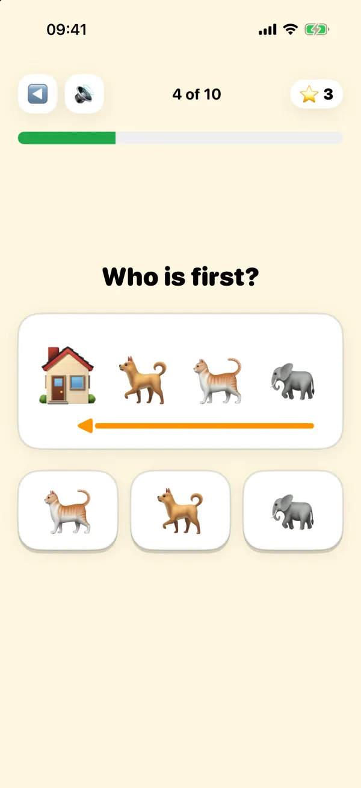

Daily math missions
20 exercises every day. Geni covers addition, subtraction, multiplication, and division in short, focused sessions. Each mission takes just a few minutes and automatically adapts to your child's current level.
20 exercises every day. Geni covers addition, subtraction, multiplication, and division in short, focused sessions. Each mission takes just a few minutes and automatically adapts to your child's current level.

Geni watches your child's answers and silently adjusts. Too easy? It gets harder. Struggling? It slows down. No frustration, no boredom — just the right challenge at the right moment.
Content is matched to your child's developmental stage:
Read the clock, set the hands, and match clocks to times on an analog clock face. Starts with o'clock and half past at age 6, then quarter past and to, then any minute.
Every answer gets immediate feedback. Kids know right away whether they got it right, so they don't practice mistakes. Correct answers build confidence; wrong answers get gently corrected on the spot.
Coins, XP, streaks, boss challenges, and time attacks keep kids coming back every day. Learning math feels like playing a game — because the rewards are real and the progress is visible.
Pure math. No pop-ups, no videos, no in-app purchases. Just focused practice in a clean, distraction-free environment designed for young learners.
20 oppgaver hver dag. Geni dekker addisjon, subtraksjon, multiplikasjon og divisjon i korte, fokuserte økter. Hvert oppdrag tar bare noen minutter og tilpasser seg automatisk barnets nivå.
Geni følger med på barnets svar og justerer stille og rolig. For enkelt? Det blir vanskeligere. Sliter barnet? Det bremser ned. Ingen frustrasjon, ingen kjedsomhet — bare den rette utfordringen til rett tid.
Innholdet er tilpasset barnets utviklingstrinn:
Les av klokka, still inn viserne og koble klokker til klokkeslett på en analog klokke. Starter med hele og halve timer fra 6 år, så kvart over og kvart på, og til slutt hvert minutt.
Hvert svar gir øyeblikkelig tilbakemelding. Barn vet med en gang om de svarte riktig, slik at de ikke øver på feil. Riktige svar bygger selvtillit; feil svar rettes opp forsiktig på stedet.
Mynter, XP, streaks, boss-utfordringer og tidsangrep holder barn engasjert dag etter dag. Å lære matte føles som å spille et spill — fordi belønningene er ekte og fremgangen er synlig.
Ren matte. Ingen pop-ups, ingen videoer, ingen kjøp i appen. Bare fokusert øving i et rent, distraksjonfritt miljø designet for unge elever.
20 ejercicios cada día. Geni cubre suma, resta, multiplicación y división en sesiones cortas y enfocadas. Cada misión toma solo unos minutos y se adapta automáticamente al nivel actual de tu hijo.
Geni observa las respuestas de tu hijo y se ajusta en silencio. ¿Muy fácil? Se vuelve más difícil. ¿Tiene dificultades? Reduce el ritmo. Sin frustración, sin aburrimiento — solo el desafío adecuado en el momento preciso.
El contenido está adaptado a la etapa de desarrollo de tu hijo:
Lee el reloj, mueve las manecillas y une relojes con horas en un reloj analógico. Empieza con en punto y media a los 6 años, luego y cuarto y menos cuarto, y después cualquier minuto.
Cada respuesta recibe comentarios inmediatos. Los niños saben enseguida si respondieron bien, así no practican errores. Las respuestas correctas generan confianza; las incorrectas se corrigen suavemente en el momento.
Monedas, XP, rachas, desafíos especiales y contrarreloj mantienen a los niños volviendo cada día. Aprender matemáticas se siente como jugar — porque las recompensas son reales y el progreso es visible.
Matemáticas puras. Sin pop-ups, sin videos, sin compras dentro de la app. Solo práctica enfocada en un entorno limpio y sin distracciones diseñado para jóvenes estudiantes.
20 exercícios todos os dias. Geni cobre adição, subtração, multiplicação e divisão em sessões curtas e focadas. Cada missão leva apenas alguns minutos e se adapta automaticamente ao nível atual do seu filho.
Geni observa as respostas do seu filho e ajusta silenciosamente. Muito fácil? Fica mais difícil. Está com dificuldades? Desacelera. Sem frustração, sem tédio — apenas o desafio certo no momento certo.
O conteúdo é adequado ao estágio de desenvolvimento do seu filho:
Leia o relógio, ajuste os ponteiros e ligue relógios às horas em um relógio analógico. Começa com em ponto e meia aos 6 anos, depois e um quarto e menos um quarto, e depois qualquer minuto.
Cada resposta recebe feedback imediato. As crianças sabem na hora se acertaram, então não praticam erros. Respostas corretas constroem confiança; respostas erradas são corrigidas gentilmente na hora.
Moedas, XP, sequências, desafios especiais e contra o tempo mantêm as crianças voltando todos os dias. Aprender matemática parece um jogo — porque as recompensas são reais e o progresso é visível.
Matemática pura. Sem pop-ups, sem vídeos, sem compras no app. Apenas prática focada em um ambiente limpo e sem distrações projetado para jovens estudantes.